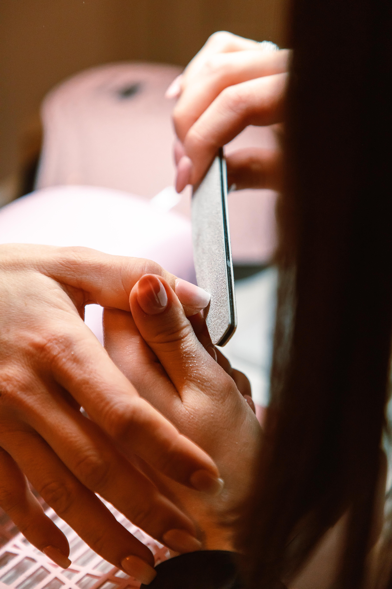
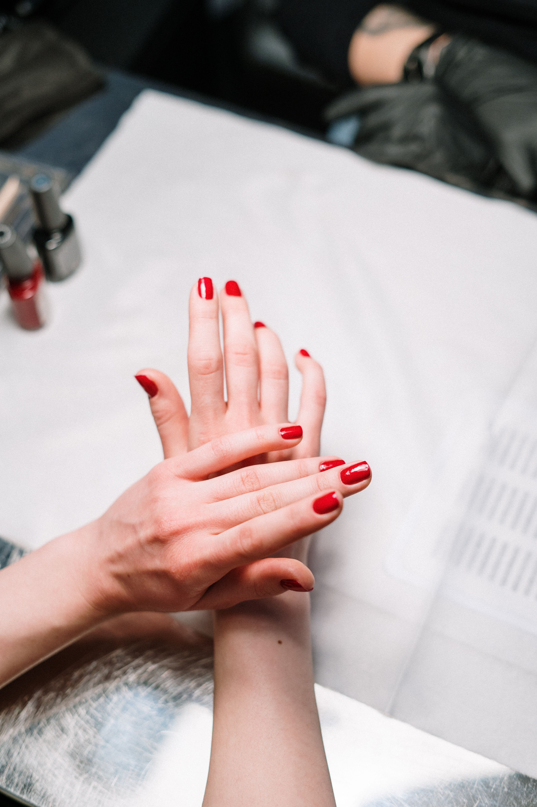
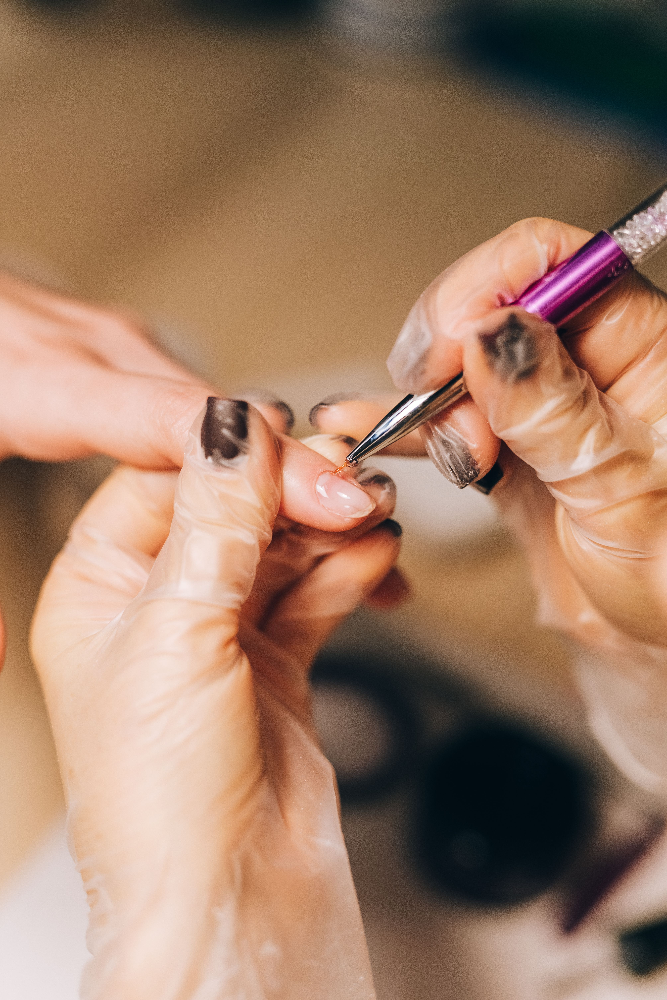

Blanc Beauty Bar
Gel manicures, builder-gel pedicures, and custom nail art in the South Market District.
About
Blanc Beauty Bar is a nail salon in the South Market District of New Orleans. The salon offers gel manicures, builder-gel pedicures, and custom nail art, and accepts walk-ins.
Walk-ins welcome
Walk-ins are accepted at this location. The salon is wheelchair-accessible. This page is for the South Market District location at 1000 Girod St, not the Magazine Street location, which has a different address and phone number.
Services
Gel manicures
Builder-gel pedicures
Builder-gel pedicure service for added strength and shape.
Manicures
Pedicures
Custom nail art
Nail art designed to the client's request.
Cat-eye
Gallery


All gallery photos are stock photos, labeled as such. They show the kind of work and setting described on this page, not this business.
Visit
Address: 1000 Girod St #6b, New Orleans, LA 70113
Hours: Monday-Friday 10am-7pm, Saturday 9am-5:30pm. Sunday hours are not listed, so call to ask about Sunday.
Phone: +1 504-510-5228
Email: BLANCBEAUTYBAR2@GMAIL.COM
Contact
Call +1 504-510-5228 Email BLANCBEAUTYBAR2@GMAIL.COM
Blanc Beauty Bar serves New Orleans. Questions? Call +1 504-510-5228.